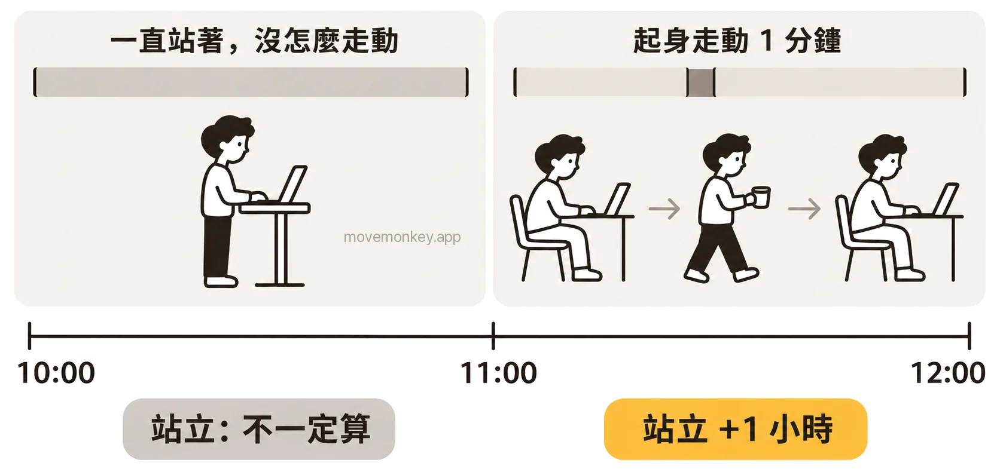

Apple Watch 站了卻沒算進站立小時，是怎麼回事？
以下依 Apple 的說明和使用者的反映，列出蘋果手錶（Apple Watch）站了卻沒算進站立小時的幾種原因，以及要檢查哪些設定。
Apple Watch 站著卻不算站立，是怎麼回事？
可能是只站著、沒怎麼活動：Apple 要求的是站起來並活動，不只是站著。
Apple Watch 依整點一小時一小時地算站立：一小時裡站起來並活動至少 1 分鐘，這一小時就算站過，記為 1 個站立小時。[1]站立目標是一天要有幾個站立小時，可以設為 6 到 16 小時。[2]站立提醒是在這一小時還沒站過時，到第 50 分鐘提醒你。[3]
Apple 介紹活動記錄圓圈時說：「別只是站著不動。站著時，可以動一動。裝個水、伸懶腰、跟同事碰頭⋯⋯」[4]

有使用者反映，Apple Watch 判斷站立主要看手臂的擺動。推購物車、站著煮飯、在站立式辦公桌前雙手放在桌上工作時，手臂不太擺動，站著也可能不算。[5]英國鄧迪大學的研究人員分析了 20 位 Apple Watch 使用者的資料，發現一小時是否記為站立小時，和這一小時裡的步數、動態能量關係最大；作者也認為，是否記為站立小時，可能不只取決於一個因素。[6]詳見 Apple Watch 怎麼判斷你站起來了？站著不動算嗎？
Apple Watch 沒戴好或關閉了手腕偵測，站立會記不到嗎？
Apple 的說明：關閉「手腕偵測」後，「部分『活動記錄』的測量無法使用」。[7]
「手腕偵測」預設為開啟；在 Apple Watch 上前往「設定」App，點一下「密碼」，就能看到它。[7]另外，Apple Watch 戴得太鬆或太緊，或是和手腕之間隔著手鐲、襯衫袖子，可能偵測不到它戴在手腕上，見 Apple Watch 沒戴好，會收不到站立提醒嗎？[8]
只帶 iPhone、沒戴 Apple Watch，不會記錄站立。「站立」圓圈只有在佩戴 Apple Watch 時才會顯示[9]，站立分鐘數也由 Apple Watch 記錄[10]。
Apple Watch 站立記不到，要檢查哪些設定？
先確認 iPhone 上的「健康」App 裡，Apple Watch 的「體能追蹤」已開啟。
Apple 建議，如果「健康」沒有記錄步數或其他資訊，為 Apple Watch 開啟這項設定。[11]
- 在 iPhone 上打開「健康」App。
- 點一下「摘要」和你的圖片，然後點一下「裝置」。
- 點一下你的 Apple Watch。
- 點一下「『隱私權』設定」，開啟「體能追蹤」。[11]
如果設定了使用輪椅，Apple Watch 記錄的是「滑動」，不是「站立」：「站立」圓圈會變成「滑動」圓圈。[1]這項設定在 iPhone 上的 Apple Watch App 裡：點一下「我的手錶」，點一下「App」，然後點一下「健康」，再點一下「健康詳細資訊」和「編輯」，在「輪椅」欄位更改。[12]
Apple Watch 上算了站立，iPhone 上為什麼還沒顯示？
iPhone 上的站立小時，可能會比 Apple Watch 上晚一點顯示。
Apple 的工程師在開發者論壇上回答開發者的提問時說明，iPhone 和配對的 Apple Watch 之間的「健康」資料同步不是即時的，什麼時候同步由系統決定。[13]
坐著時 Apple Watch 也算了站立，是怎麼回事？
有使用者反映，坐著時手臂一直在動，例如織毛衣，也可能被算作站立。[5]
這和站著卻不算站立是同一個原因，見上文站著為什麼不算。

久坐提醒 App · 現已在 App Store 推出
MoveMonkey：從上次起身開始算的久坐提醒
從你上次起身開始，坐滿你設定的時間（30、45、60 或 90 分鐘），小猴子才會提醒你。適用於 iPhone 和 Apple Watch，只用 iPhone 也可以；走動或站立後自動重新計時。
早上等你起身後才開始計時，午休可以設為不提醒，提醒時段也由你設定。
點一下「起身動動」，只要走上 1 分鐘，小猴子還會為你喝采。
核心功能永久免費，沒有廣告。
看更詳細的介紹 →